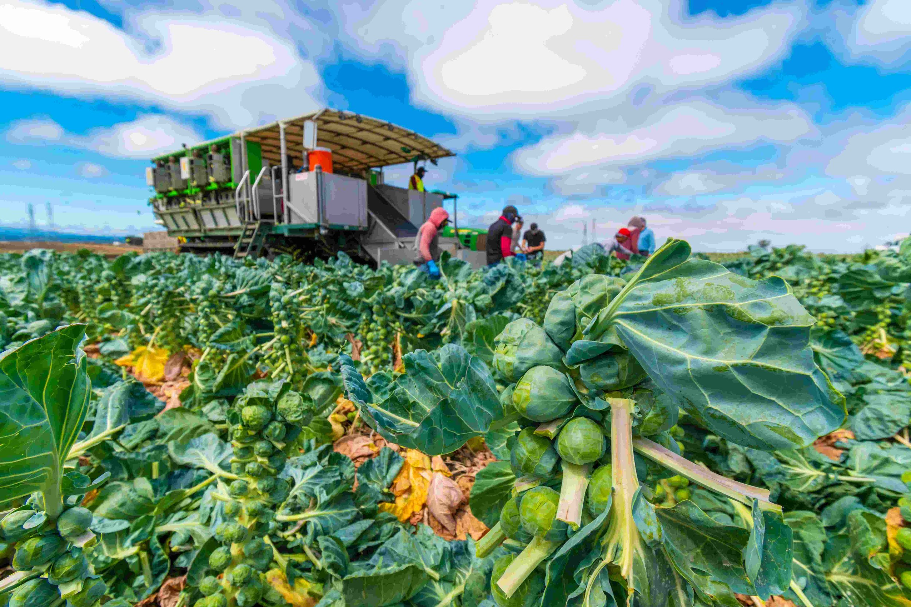

Tech
The Rise of AI in Everyday Life
23 Oct 2024
Artificial Intelligence (AI) is rapidly transforming the world around us, from voice assistants like Siri and Alexa to advanced recommendation algorithms on streaming platforms. AI’s influence stretches across healthcare, finance, and even agriculture, where it helps automate labor-intensive tasks and enhance productivity. As this technology advances, the potential for more personalized and efficient daily experiences becomes a reality.
 User1
User1
Tech
Quantum Computing: The Next Big Leap
19 Oct 2024
Quantum computing promises a revolution in computational power, enabling calculations that classical computers could never handle within a reasonable time frame. From improving cryptographic systems to simulating complex molecules in drug discovery, quantum computers hold the potential to solve problems that seemed insurmountable. Researchers worldwide are racing to make this cutting-edge technology practical and widely available..
User2

Food
The Farm-to-Table Movement
06 Oct 2024
The farm-to-table movement emphasizes sourcing food directly from local farms to ensure freshness and support sustainable agriculture. Restaurants are increasingly partnering with local farmers to serve dishes that reflect the region’s unique flavors and seasonal produce. This trend not only promotes healthy eating but also supports local economies and environmentally friendly practices.
User3
Tech
The Expanding World of Extended Reality (XR)
29 Oct 2024
Extended Reality (XR) merges Augmented Reality (AR), Virtual Reality (VR), and Mixed Reality (MR) to create immersive environments that are reshaping entertainment, education, and workspaces. Businesses use XR for virtual training, while museums offer AR experiences to enrich historical exhibits. As XR devices become more accessible, their impact on learning and interaction will only grow.
User4
Tech
5G Networks and the Future of Connectivity
20 Oct 2024
The rollout of 5G networks represents a major leap in mobile connectivity, offering faster data speeds, lower latency, and support for a massive number of connected devices. This advancement opens doors to developments in IoT, autonomous vehicles, and smart cities. With 5G technology, real-time data streaming and highly responsive communication are becoming integral parts of our connected world.
User5

News
Global Push for Renewable Energy
16 Oct 2024
As concerns about climate change grow, countries around the world are increasing investments in renewable energy sources like wind, solar, and hydroelectric power. Recent international agreements have solidified a commitment to reducing carbon emissions, with ambitious goals set for the coming decades. This global shift not only promises cleaner energy but also boosts job growth in green technology sectors.
User6

Tech
Cybersecurity in the Age of Remote Work
26 Oct 2024
The global shift to remote work has highlighted cybersecurity risks, pushing organizations to prioritize digital defenses. With increased reliance on cloud-based tools and collaborative platforms, businesses face new challenges in protecting data from potential breaches. From multi-factor authentication to zero-trust networks, companies are rethinking their cybersecurity strategies to safeguard sensitive information.
User7

News
The Evolution of Work Culture Post-Pandemic
10 Oct 2024
The pandemic accelerated shifts in workplace culture, with many companies adopting hybrid or fully remote work models. These changes are reshaping the traditional office environment, focusing more on flexibility and work-life balance. As organizations and employees adapt to new norms, industries are innovating to support distributed teams and remote collaboration.
User8

Food
Exploring the Plant-Based Revolution
12 Oct 2024
Plant-based diets are gaining popularity as people become more health-conscious and environmentally aware. From veggie burgers to dairy-free cheese, food companies are creating delicious alternatives that rival traditional options. This growing trend highlights a shift in consumer preferences, making plant-based eating accessible and appealing to a broader audience.
User9